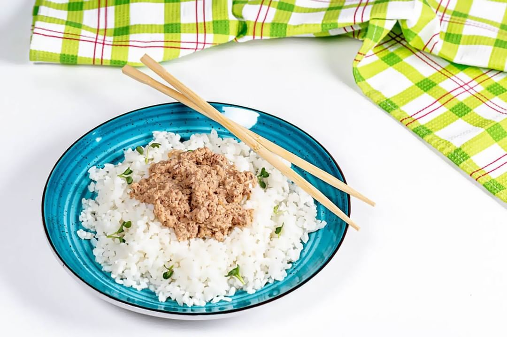

Kalerábová polievka podľa @tempomagazin — Normy Jedál
➡️ 100 receptov 15. časť ⬅️
Omeleta so žihľavou 🍳 je výborný spôsob, ako dostať poriadnu dávku železa do detí, ktoré odmietajú mäso. 🥩 Póriková ryža s tuniakom a kalerábová polievka takiež potešia nejedného malého labužníka. 😋 #100receptov #prenajmensich #rychleobedy #zdraveobedy #predeti #omeletasozihlavou #ryzastuniakom #kalerabovapolievka #temporecepty #temposerial #novyclanok #tempomagazinm